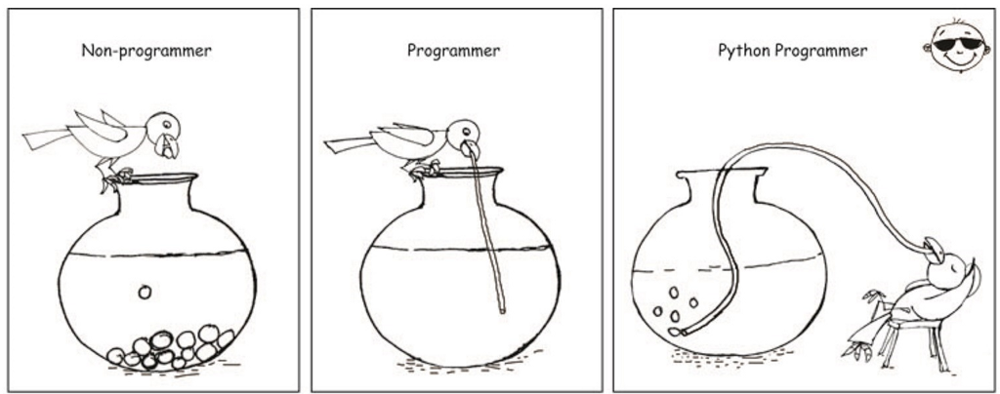
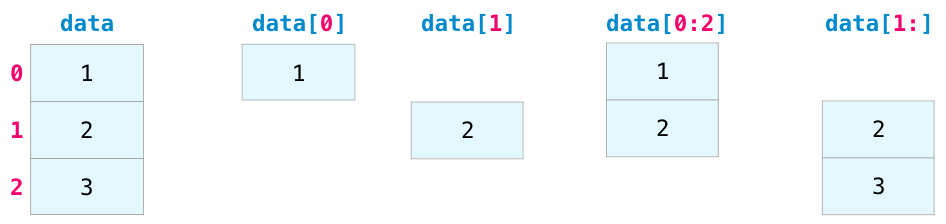

Python crash course for Chem324.
The objective of these notes it to provide a quick introduction to Python language. No background in programming or previous knolwedge of Python is assumed. These notes will only cover the bare essentials of Python which will be used throughout the course.
Since our coverage will necessarily be brief, you can find some more pointers to excellent resources for learning Python listed below. Links under 1 are short and very basic. Links under 2 short but somewhat more advanced and Links under 3 are long and comprehensive.
1. Short tutorials by software carpentry for scientists
2. Condensed coverage of scientific applicaitons can be found in the following online notes:
- Python programming for Scientists
- Introduction to Python for Computational Science and Engineering
- Scientific Python lectures by Robert Johanssen
3. Finally there are the official Python documentaiton and SciPy tutorials. These provide much more in depth and thorough coverage.

Introduction
Python is a fantastic general-purpose programming language on its own, but with the help of a few popular libraries (numpy, scipy, matplotlib) it becomes a powerful environment for scientific computing.
You may already know some Python and that’s great! For the rest of you, this section will serve as a quick crash course both on the Python programming language and on the use of Python for scientific computing.

Material covered in this tutorial:
Basics of python language:
- Data types: numbers, booleans, strings, lists
- Functions
- Control flow
Interactive computing with Jupyter and scientific libraries.
- Numpy arrays
- Scipy functions
- Matplotlib plotting
Basics of Python
Python is a high-level, dynamically-typed, multiparadigm programming language.
Python code is often said to be almost like pseudocode, since it allows you to express very powerful ideas in very few lines of code while being very readable. A few examples without explanations are below:
menu = ["pizza", "sushi", "taco"]
for item in menu:
print(item)
menu = ["sushi", "123", "taco", "frog"]
for item in menu:
if item == "taco":
print("yum!")
else:
print("eww")
While these are silly examples for illustration, with the same simplicity of code you can do fairly sophisticated calculations. Do not worry if some of these commands seem unfamiliar, we are going to explain them later on.
Python versions
There are older version of Python (Python 2.7) and newer versions (Python 3.7+). We will always use the latest version. If you have installed Python on your computer you can check your Python version at the command line by running python --version.
Comments
A “comment” is a part of code that is not run. It is a way to write notes about what your code is doing at certain points. This is helpful when you, or someone else, looks at the code later, so they know what it is doing. To make a comment in Python, precede the comment with a #.
# Comments can be on their own line like this
print("Hi")
print("World") # A comment can also be at the end of a line
Whitespace
In programming, white space refers to all of the space in your document that is not filled with code. Examples of whitespace are spaces, tabs (indents), and newlines (when you press enter and go to the next line). Python is very particular about white space and how you use it, specifically the use of indentations and newlines.
- Newlines: Python uses newline characters to separate logical lines of code. A logical line of code consists of a “command” in code. It is considered good Python style, or Pythonic , to separate logical lines with newlines, although other methods exist.
- Indentation: Tab characters, or indentation, are used to indicate code blocks in Python. These will be seen later in the tutorial with for loops, while loops, if statements, and other structures. For now, the take-home message is to follow the indentation pattern of the example and avoid unnecessary indentation.
print("Hello") # This is a logical line that assigns the value 16 to x
print("World") # This is another logical line, on the next line, that prints the value of x
print("Hello") # This line is not indented, so it is fine
print("World") # Unnecessary indentation, this code will not work
Exercise: Remove unnecessary indentation in the broken code above and execute it again.
Basic data types
Python has a variety of data types for managing different kinds of data. Examples are:
- numbers
- strings
- lists
- dictionaries
- sets
- tuples
Some of these are point types such as simple numbers often used for basic arithmetic operations. Others are of container kind which contain sequences of numbers often used as vectors and matrices.
Numbers
Numbers are an important data type for us which we use to do all sorts of computations. It is important to know that the numbers in Python can be:
- Integers: -2, -1, 0, 1, 2
- Floats: -0.001, 4.56, 3.14
- Complex numbers: 1.2+2.5j, 2j, 3+1j
Let us begin creating some numeric data and assigning variable names:
x = 3 # variable called x
print(x) # print contents of x
x # Works the same for single line but for multiple lines you need print. See below
print(x + 18) # Addition
print(x - 1) # Subtraction
print(x * 2) # Multiplication
print(x ** 2) # Exponentiation
x=2.3
type(x) #let's find out what kind of number is this
Exercise: change the number type to float and complex number and execute the above cells again
x, y, z = 1, 2, 5 # multiple assignments can be done with one line!
print(x)
print(y)
print(z)
x + y, x * z # Multiple operations can be done with one line also, separated by a comma!
Complex numbers are handled just as easily
z1 = 10+2j
z2 = 3-1j
# extract real and imaginary parts as well as the conjugate
z1.real, z1.imag, z1.conjugate()
z1_abs = z1 * z1.conjugate()
print(z1_abs)
z1_abs**0.5
Booleans
Booleans are key type in any computer language they allow determining true or false statements and constructing logical set of operations
x=True
y=False
z=True
x==z # == (equals), != (not equal), > (greater than), < (less than) comparison operators and return True or False.
y=2.3
y>2
y<2
y==2.3
y!=-234
Strings
hello = 'hello' # String literals can use single quotes
x = "world blah blah" # or double quotes; it does not matter.
type(x)
hw = hello + ' ' + world # String concatenation with the + operator
print(hw) # prints "hello world"
String objects have a bunch of useful methods; for example:
s = "hello"
print(s.capitalize()) # Capitalize a string; prints "Hello"
print(s.upper()) # Convert a string to uppercase; prints "HELLO"
print(s.rjust(7)) # Right-justify a string, padding with spaces; prints " hello"
print(s.center(7)) # Center a string, padding with spaces; prints " hello "
print(s.replace('l', '(ell)')) # Replace all instances of one substring with another;
# prints "he(ell)(ell)o"
print(' world '.strip()) # Strip leading and trailing whitespace; prints "world"
Containers
Python includes several built-in container types: lists, dictionaries, sets, and tuples. Lists will be the most useful for our objectives in this course so we only cover lists.
Lists

A list is a generic container for holding any Python type, be it a string, numbers, other lists, or a mix of everything.
xs = [3, 1, 2,5,6,'blah'] # Create a list
print(xs[4])
xs[2] = 'foo' # Lists can contain elements of different types
print(xs)
xs.append(145) # Add a new element to the end of the list
print(xs)
x = xs.pop() # Remove and return the last element of the list
print(x, xs)
As usual, you can find all the gory details about lists in the documentation.
Slicing
In addition to accessing list elements one at a time, Python provides concise syntax to access sublists; this is known as slicing:

nums = range(0,5,1) # range(i,j,k) is a built-in function that creates a list of integers from i to j with a stride k
nums=list(nums) # make a list
nums[0:3]

Loops
Loops alow you to go over the elements of containers and act on them given specific instructions. You can loop over the elements of a list like this:
animals = ['cat', 'dog', 'monkey', 'lion']
for animal in animals:
print(animal)
List comprehensions:
When programming, frequently we want to transform one type of data into another. As a simple example, consider the following code that computes square numbers:
nums = [0, 1, 2, 3, 4,5]
squares = []
for x in nums:
squares.append(x ** 3)
squares
You can make this code simpler using a special trick of lists called list comprehension:
nums = [0, 1, 2, 3, 4, 5]
squares = [x ** 2 for x in nums] # This is a list comprehension
squares
List comprehensions can also contain conditions:
nums = [0, 1, 2, 3, 4]
even_squares = [x ** 2 for x in nums if x % 2 == 0]
even_squares
The if statement
The if statement allows you to execute a block of code optionally, if certain conditions are met. An expression which evaluates to True or False, called the conditional statement, must be in the parentheses following the if keyword.
x = 9
if( x + 3 > 11):
print("I entered the conditional block!")
print("I am also part of the conditional block.")
print('''Since I am not indented, I am not in the
conditional block and execute every time.''')
The if statement can be followed with optional blocks of code that will be executed if another condition, or no condition, is met. The default code block when no condition is met is an else statement. Each if statement can also be followed by zero or more elif statements. These are used to chain together if statements with different conditions. Try changing x to trigger the different conditions below.
x = 9
if( x == 9):
print("x equals 9")
elif(x < 9):
print("x is less than 9")
elif(x > 9 and x < 20):
print("x is between 9 and 20")
else:
print("x is greater than 20")
Functions
Python functions are defined using the def keyword. For example let us write a polynomial function
def sq_func(x): # A more conventional function
return 3.0*x**3 + x**2 + 10*x+1.0
sq_func(4.0)
NumPy
NumPy is the core library for numerical and scientific computing in Python. It provides a high-performance multidimensional array object, and tools for working with these arrays.
To use NumPy, we first need to import the numpy package:
import numpy as np
Numpy Arrays: overview
- A numpy array is a grid of values, all of the same type, and is indexed by nonnegative integers.
- The array can have any number of dimensions 1D, 2D, 3D, …
-
The shape of an array is a tuple of integers giving the size of the array along each dimension. For example a 1D vector of size 4 is (4,). a matrix of size 2 is (2,2), a matrix with size 2x5 is (2,5)
- Numpy arrays can be generates either by feeding lists to numpy or on the fly using numpy special methods
Generating arrays from lists
z.
data=np.array([1,2,3])
data
data.shape

print(data[0], data[1], data[2])
data[0] = 10 # Change an element of the array
print(data)
b = np.array([[1,2,3],[4,5,6]]) # Create a 2D array
print(b)
print(b.shape)
print(b[0, 0], b[0, 1], b[1, 0])
Generating arrays using special methods

a = np.zeros((2,2)) # Create an array of all zeros
print(a)
b = np.ones((1,5)) # Create an array of all ones
print(b)
e = np.random.random((3,3)) # Create an array filled with random values
print(e)
x = np.linspace(1,100,10) # create an array between 1 and 100 divided by 10 segments
print(x)
y = np.arange(1,100,10) # create an array strting from 1 to 100 in 10 incremenets
print(y)
c = np.full((2,2), 7) # Create a constant array
print(c)
d = np.eye(3) # Create a 3x3 identity matrix
print(d)
k = np.tile(d,3) # repeat the array d 3 times
k
Indexing, slicing and dicing arrays
Slicing: Similar to Python lists, numpy arrays can be sliced. Since arrays may be multidimensional, you must specify a slice for each dimension of the array:
data=np.array([1,2,3])
data[0:3]

data=np.array([[1,3,5], [2,4,6]])
data.T

a = np.array([[1,2,3,4], [5,6,7,8], [9,10,11,12]])
a
a.shape
a[1,:] #
a[1,3]
a[:,-1] # last column
a[-1,:] # last row
Same principles of slicing and shapes applies to the N-dimensional arrays.

Array math
Basic mathematical functions operate elementwise on arrays, and are available both as operator overloads and as functions in the numpy module:
x = np.array([1,2,3,4])
y = np.array([5,6,7,8])
# Elementwise sum; both produce the array
print(x + y)
# Elementwise difference; both produce the array
print(x - y)
# Elementwise product; both produce the array
print(x * y)
print(x / y)
print(np.sqrt(x))
1.5*x # elementwise multiplication!
y+3 # elementwise addition.
As last two examples show can also do operations on arrays with unequal shapes! These are powerful operations which follow set of rules called broadcasting. See the end for these rules and examples
To use vector,matrix dot product between A and B use A@B
x = np.array([[1,2],[3,4]])
y = np.array([[5,6],[7,8]])
v = np.array([9,10])
w = np.array([11, 12])
# Inner product of vectors; both produce 219
print(v@w)
# Matrix / vector product; both produce the rank 1 array [29 67]
print(x@v)
# Matrix / matrix product; both produce the rank 2 array
print(x@y)
Aggregation
Numpy provides many useful functions for performing computations on arrays; one of the most useful is sum:
x = np.array([[1,2],[3,4]])
x
print(np.sum(x)) # Compute sum of all elements; prints "10"
print(np.sum(x, axis=0) ) # Compute sum of each column; prints "[4 6]"
print(np.sum(x, axis=1)) # Compute sum of each row; prints "[3 7]"
print(x.max())
print(x.min())
Reshaping arrays
x=np.array([1,2,3,4,5,6,7,8,9,10])
x
x=x.reshape(2,5)
x
x=x.reshape(5,2)
x
x.T # transpose matrix
Broadcasting rules of numpy arrays
Broadcasting is a powerful mechanism that allows numpy to work with arrays of different shapes when performing arithmetic operations. Frequently we have a smaller array and a larger array, and we want to use the smaller array multiple times to perform some operation on the larger array.
The rules of broadcasting are:
- Rule 1: If the two arrays differ in their number of dimensions, the shape of the one with fewer dimensions is padded with ones on its leading (left) side.
- Rule 2: If the shape of the two arrays does not match in any dimension, the array with shape equal to 1 in that dimension is stretched to match the other shape.
- Rule 3: If in any dimension the sizes disagree and neither is equal to 1, an error is raised.

example of broadcasting
data = np.array([[1,2],[3,4],[5,6]])
ones_row = np.array([1,1])
data
ones_row
data.shape, ones_row.shape
data+ones_row
Let us see both rules in action on another example
a = np.arange(3).reshape((3, 1))
print(a)
print(a.shape)
b = np.arange(3)
print(b)
print(b.shape)
Lets predict a+b sum. By first rule the sum of arrays with shapes (3,1)+(3,) are broadcast to (3,1)+(1,3) then by second rule dimensions one are padded to match the shape (3,3)+(3,3)
a+b
Plotting with Matplotlib
Matplotlib is a standard plotting library of python. We begin by importing it first.
import matplotlib.pyplot as plt
By running these special commands known as magic commands (start with %), we will be displaying plots inline and making them in high resolution:
#To keep plots inside notebook we add thee magic comand starting with %
%matplotlib inline
#For interactivity try this:
#%matplotlib notebook
#If your screen has retina display this will increase resolution of plots
%config InlineBackend.figure_format = 'retina'
The most important function in matplotlib is plot, which allows you to plot 1D and 2D data. Here is a simple example:
# Compute the x and y coordinates for points on a sine curve
x = np.arange(0, 3 * np.pi, 0.1)
y = np.sin(x)
# Plot the points using matplotlib
plt.plot(x, y)

if we want to customize plots it is better to plot by first defining fig and ax objecs which have manuy methods for customizing figure resolution and plot related aspects respecticely.
fig, ax = plt.subplots()
y_sin = np.sin(x)
y_cos = np.cos(x)
# Plot the points using matplotlib
ax.plot(x, y_sin)
ax.plot(x, y_cos)
ax.set_xlabel('x axis label')
ax.set_ylabel('y axis label')
ax.set_title('Sine and Cosine')
ax.legend(['Sine', 'Cosine'])
#fig.savefig("myfig.pdf")

from scipy.constants import h, k, c
h, k, c # Plank constant, Boltzmann constant and speed of light
Let us know use our knoledge of numpy, functions and matplotlib to plot $\rho(\lambda,T)$ vs $\lambda$.
# Define range of wavelengths (micrometers)
lambdas = np.arange(1, 3e3, 1)
# Define convenient function for computing intensity as a function of T
def planck(wav, T):
wav=wav*1e-9 # convert to meters
a = 2.0*h*c**2
b = h*c/(wav*k*T)
intensity = a/( (wav**5) * (np.e**b - 1.0) )
return intensity
# Plot intensities, vary T
plt.plot(lambdas, planck(lambdas,7000), color='red')
plt.plot(lambdas, planck(lambdas,6000), color='orange')
plt.plot(lambdas, planck(lambdas,5000), color='grey')
# Annotate plots
plt.xlabel('$\lambda$', fontsize=15)
plt.ylabel('Intensity',fontsize=15)